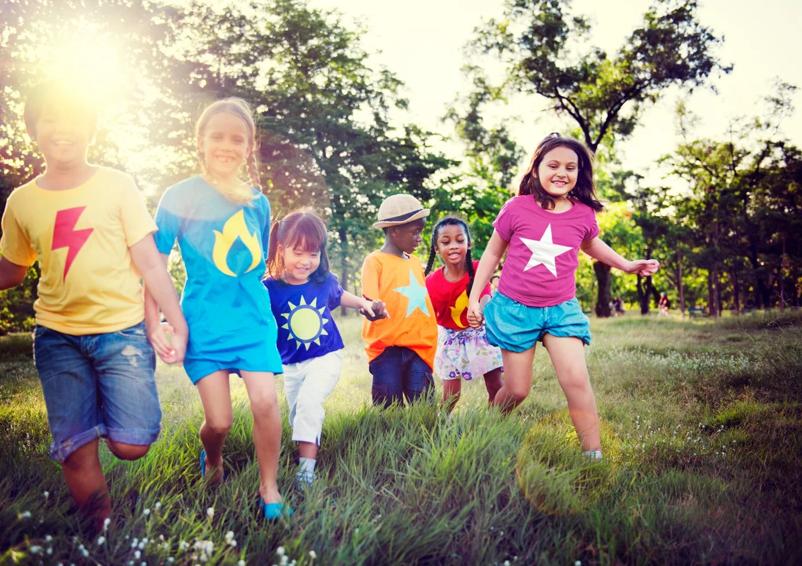

Guarde o celular
Ao entrar no espaço, coloque seu aparelho dentro da bolsa SAFE-K.
Menos distração. Mais vida acontecendo.
Uma pausa nas telas. Mais espaço para aprender, se conectar e viver o agora. Conheça a bolsa que mantém o celular com você — e a atenção no que importa.
 SAFE-K / Visualização da nova identidade
SAFE-K / Visualização da nova identidadePresença onde
ela faz diferença.


O encontro faz a diferença.Tecnologia em pausa. Pessoas no centro.
A gente acredita no olhar atento, nas boas conversas e nas ideias que surgem quando estamos realmente juntos.
A SAFE-K ajuda a criar ambientes livres de distrações digitais. Uma solução simples, que respeita a posse do celular e abre espaço para experiências mais humanas.
Conheça o que nos moveOnde usar
Da sala de aula à celebração. Explore como a SAFE-K pode fazer parte do seu espaço.
 Educação básica
Educação básicaMais atenção na aula. Mais convivência nos intervalos.
Conheça a aplicaçãoO público vive a experiência, de corpo e alma.
Conheça a aplicaçãoAmbiente de trabalhoReuniões com atenção. Equipes mais conectadas.
Conheça a aplicaçãoUniversidades, festas, tribunais, acampamentos, hospitais e muito mais.
Explore todas as aplicaçõesComo funciona
Três etapas para colocar o celular em pausa e a experiência em primeiro plano.
Ao entrar no espaço, coloque seu aparelho dentro da bolsa SAFE-K.

A bolsa é trancada e continua com você durante toda a experiência.

Procure a área de desbloqueio e encoste a bolsa em uma base.
O agora merece sua atenção
Mais foco. Mais conexão. Mais presença.
Na conversa
Educação, cultura e experiências que colocam a presença em pauta.
A matéria do acervo reúne orientações sobre a organização do uso de celulares no ambiente escolar.
Continuar a leitura
A atenção em sala de aula e o uso consciente da tecnologia são temas centrais no debate educacional.
Continuar a leitura
Um relato internacional explora como a proposta de uma celebração sem telas influencia a participação dos convidados.
Continuar a leituraDúvidas frequentes
Entenda como funciona a pausa nas telas.
Ver todas as respostasUma solução de guarda que ajuda a criar ambientes livres do uso de celulares. O aparelho é colocado em uma bolsa que fica trancada durante a experiência, permanecendo com seu dono.
Não. O celular continua em sua posse, dentro da bolsa. Você permanece com o aparelho durante todo o período de uso.
Basta encostar a bolsa em uma base de desbloqueio, disponível nos pontos definidos pela organização do espaço. A equipe local orienta o acesso.
Procure a área de desbloqueio ou a equipe responsável. A organização deve comunicar os pontos de acesso e orientar situações que demandem o uso do aparelho.
Vamos construir essa experiência
Conte sobre o seu espaço. A gente ajuda você a entender o próximo passo.